Программа sPlan 7.0
Программа sPlan 7.0. - это одна из самых простых и удобных программ для вычерчивания электрических схем и рисунков.
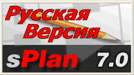
Интерфейс программы sPlan 7.0.
На рис. 2 представлен основные элементы интерфейса программы sPlan 7.0.
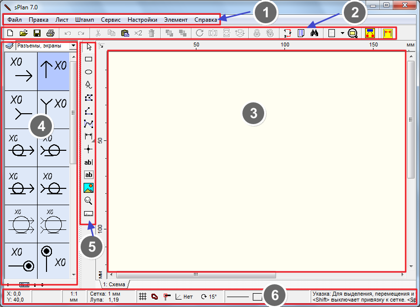
1 - Главное меню
2 - Панель инструментов
3 - Поле чертежа
4 - Библиотека элементов
5 - Панель инструментов черчения
6 - Строка состояния
Меню Файл (рис. 3) содержит следующие команды:
- Создать новый лист.
- Открыть лист (схему).
- Сохранить.
- Сохранить как.
- Чертежи (*.spl7). Здесь находятся заготовки для схем (чертежей), рамки для листов размером А4.
- Файлы рисунков. Вставка рисунков в схему.
- Экспорт. Позволяет сохранять схему (чертеж) в форматах: GIF, JPG, BMP, EMF и SVG.
- Копировать в буфер обмена
- Печать… Вывод на печать чертеж электрической схемы.
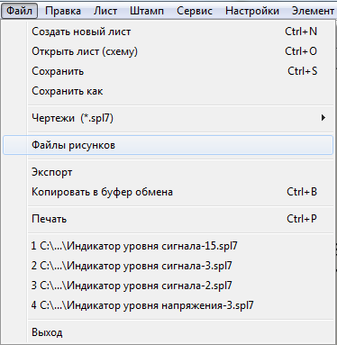
Меню Правка (рис. 4) содержит команды редактирования:
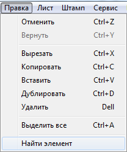
Команды меню Лист (рис. 5) задают свойства листа.
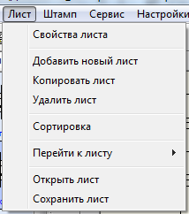
Команды меню Штамп (рис. 6) позволяют вставить в лист стандартный штамп (рамку) или убрать его.
Меню Сервис (рис. 7) содержит команды для работы с элементами схемы.
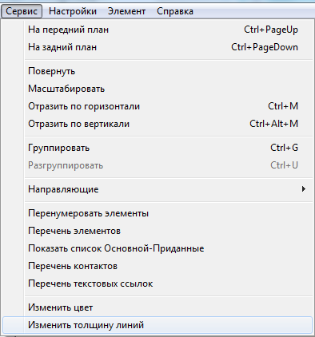
Панель инструментов содержить кнопки команд, которые наиболее часто используются при вычерчивании схемы
Cлева находятся библиотеки элементов. Если щелкнуть по голубой книжке, то появится список имеющихся библиотек. Слева внизу находятся кнопочки "+". "-", кнопка "Abcd"(название в библиотеке) и стрелки "вверх" и "вниз". Если нажать "+", то добавится ещё колонка с элементами, нажать "-" - убавится. Стрелки вверх и вниз позволяют переключать разделы отображаемых элементов.
С помощью мыши можно перетащить любой элемент из библиотеки на лист.
В нижней часть окна программы расположена строка состояния, в которой отображается информация о позиции мыши, настройках линий и т. д. Так же здесь Вы можете включить или выключить некоторые параметры программы, такие как привязка к сетке, значение угла сетки и др.
Справа от окна библиотеки компонентов имеется вертикальная панель инструментов черчения для создания и редактирования чертежей и схем.
Панель инструментов черчения
Назначение кнопок панели инструментов черчения представленны в таблице 1.
Таблица 1
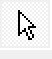 |
Указка. Курсор, с помощью которого можно выбрать на схеме элемент, линию, выделить группу элементов, перетащить из библиотеки элементов на схему выбранный элемент и т.д. |
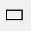 |
Прямоугольник. Для вычерчивания прямоугольника, квадрата, скругленного прямоугольника. |
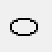 |
Окружность. Для вычерчивания окружности, эллипса, дуги |
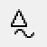 |
Особая форма. Для вычерчивания правильного многоугольника, звезды, синусоиды, построения таблицы. |
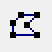 |
Фигура. Для вычерчивания любого многоугольника. |
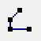 |
Линия. Для вычерчивания линий соединения элементов схемы, ломаных линий. |
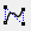 |
Кривая Безье. Для вычерчивания кубической кривой Безье, которая имеет четыре опорные точки: начальную, конечную и две промежуточные. Две промежуточные точки используются для управления формой кривой. |
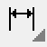 |
Размеры. Для простановки линейного и углового размеров, радиуса и диаметра. |
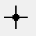 |
Узел (Точка соединения). Ставить точку в местах электрических соединений проводников. |
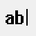 |
Текст. Добавляет однострочный текст. |
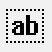 |
Текстовый блок. Добавляет текстовый блок (многострочный текст). |
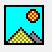 |
Рисунок. Предназначена для вставки изображений, рисунков форматов BMP и JPG. |
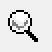 |
Лупа. Для изменения масштаба чертежа, схемы. |
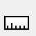 |
Измеритель. Для измерения размер элементов чертежа. |
Для отключения действия этих кнопок, нужно щелкнуть правой кнопкой мыши в районе листа, или нажать на кнопку "Указка" на панели инструментов черчения.
Построение геометрических фигур
Вычерчивание прямоугольника
При нажатии на кнопку , на листе появляется перекрестие из двух синих линий. Для рисования прямоугольника в начальной точке нажмите левую кнопку мыши и, удерживая ее, переместите курсор на конечную точку. Отпустите кнопку мыши. Для вычерчивания квадрата нужно удерживать клавишу CTRL при перемещении курсора мыши.
Для изменения параметров прямоугольника, нужно указкой щёлкнуть по его линии и вид нашего прямоугольника изменится на следующий.
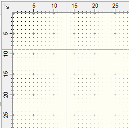
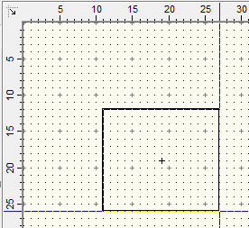
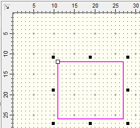
Если протащить белый квадратик в левом верхнем углу прямоугольника внутрь, его углы скругляются.
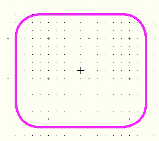
Если приблизить указку к любому чёрному квадратику, в районе квадратика появится двойная стрелка, указывающая на возможные направления деформации прямоугольника. Можно захватить левой кнопкой мыши эту точку и растягивать или сжимать прямоугольник.
Двойной щелчок мышью на линии прямоугольника, откроет окно свойств прямоугольника (окно "Контур и заливка", рис. 10). В этом окне можно изменять такие свойства, как стиль, ширина и цвет линии, а так же выполнить заливку прямоугольника.
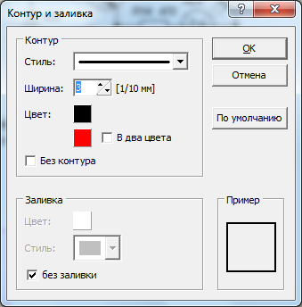
Построение окружности и дуги
Для вычерчивания окружности необходимо выбрать кнопку и удерживая нажатой клавишу CTRL курсором мыши указать квадратную область в которую будет вписана окружность (рис. 11). Размеры окружности можно контролировать в строке состояния. Если не нажимать клавишу CTRL, получится эллипс.
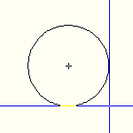
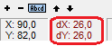
Перемещением белого квадратика можно начертить дугу (рис. 12). Если к дуге применить заливку, то получиться сектор (сегмент) круга.
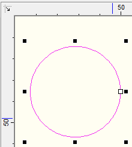
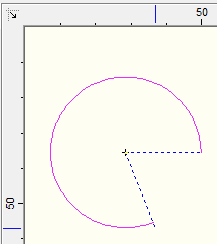
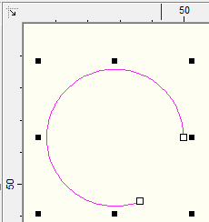
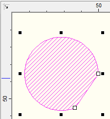
Построение многоугольника и ломаной линии
Для вычерчивания многоугольника необходимо выбрать кнопку ("Фигура"). Первое нажатие мыши отмечает начальную точку многоугольника. Последующие нажатия отмечают промежуточные точки (углы) полигона. По завершению черчения многоугольника нажмите на правую кнопку мыши. Чтобы отключить команду, нужно ещё раз нажать правую кнопку мыши.
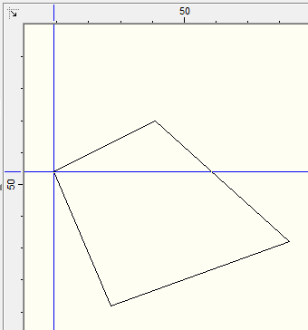
Если щелкнуть по линии многоугольника, появятся чёрные и белые квадратики, с помощью которых можно придать фигуре любую форму. Если потянуть за синие точки, появятся новые углы (рис. 13).
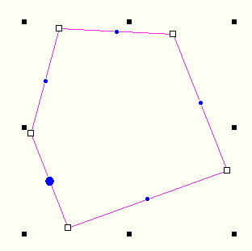
Построение ломаной линии аналогично построению многоугольника.
Построение кривой Безье
Можно создавать несколько кривых Безье следующих друг за другом. В этом случая конечная точка первой кривой, будет являться начальной точкой второй кривой и так далее.
Первый щелчок определяет положение начальной точки кривой, следующие два положение промежуточных точек, а четвертый положение конечной точки кривой Безье. Если мы хотим создать еще одну кривую, то далее выбираем только две промежуточных точки и конечную, так как начальная точка этой кривой является концом предыдущей кривой Безье.
Чтобы закончить построение щелкните правой кнопкой мыши на листе sPlan или нажмите клавишу ESC.
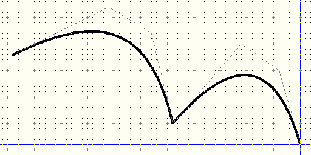
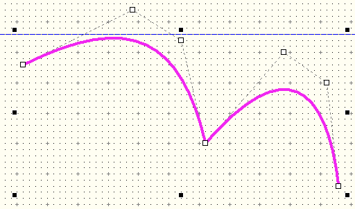
При двойном щелчке мышью на кривой Безье откроется окно свойств этого элемента. В этом окне можно изменить такие свойства, как стиль линии, ширину и цвет, а так же установить стрелки на концах кривой. Для изменения положения узлов кривой Безье, переместите соответствующие узлы мышью за белые квадратики. Новая кривая Безье всегда будет создаваться с параметрами последней нарисованной кривой.
Инструмент "Размеры".
Наносить размеры можно на любые фигуры. Для этого нужно нажать на маленький красный треугольник кнопки "Размеры", и в выпадающем списке выбрать необходимый тип размерной линии:
- Размер
- Радиус
- Диаметр
- Угол.
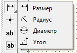
Для нанесения линейного размера щелкаем мышью в начальной и конечной точках размера (рис. 15).
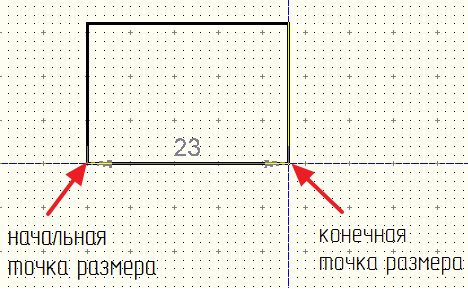
Затем ведём перекрестие в сторну и щелчком мыши фиксируем размерную линию (рис. 16).
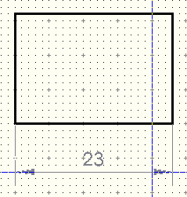
Сделав двойной щелчок получим окно "Настройка простановщика размера" в котором можно изменить цвет, шрифт размерных чисел, конфигурацию стрелок и размерных линий и т.п.
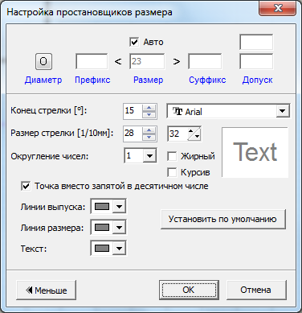
- Диаметр - При нажатии на эту кнопку, перед размерным числом появиться символ диаметра.
- Префикс - Вводится текст, который появится перед числовым значением.
- Авто: - При установке галочки в окошке "Авто", числовое значение размера в окне Значение, будет установлено автоматически.Вы можете ввести фиксированное числовое значение размера, если отключить функцию автоматического ввода размерного числа.
- Суффикс - Вводится текст, который появится после числового значения.
- Допуски - Здесь вы можете ввести специальные допуски на размеры. Допуски появятся выше и ниже после размерного числа.
- Дизайн: В этом разделе вы можете изменить дизайн размерной линии.
- Установить по умолчанию: С помощью этой кнопки можно установить дизайн размерной линии по умолчанию. Значение по умолчанию является фиксированным и соответствует общему обозначению размерной линии.
Показ обозначения размеров на схеме, можно включать и отключать кнопкой
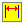
"Размеры. Вкл/Выкл" на панели инструментов .Вставка текста
Для вставки однострочного текста нажмите кнопку и щелкните мышкой на месте размещения текст. Перед вами откроется диалоговое окно «Свойства текста».
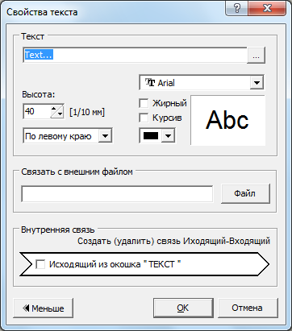
Отображаемый текст задается в поле "Текст". Высота символов задается с шагом 0,1 мм (значение, установленное в поле "Высота" умножается на 0,1 мм).
В этом окне можно установить выравнивание , гарнитуру шрифта, начертение и цвет текста.
Если нажать кнопку в правой части поля "Текст", то появится окно «Текстовые расширения», в котором вы можно вставить, кроме текста, переменные и константы.
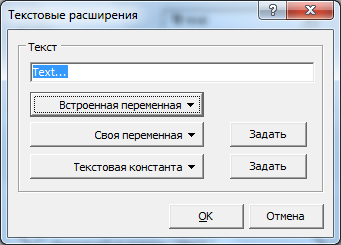
В программе sPlan7.0 есть возможность определять активные ссылки тексту. Имеется два вида активных ссылок:
- Связать с внешним файлом (Внешние ссылки): С помощью этой функции можно создать ссылку на сайт или на файл.
- Внутренняя связь (Внутренние ссылки): С помощью этих ссылок, вы можете перейти в любое место вашего проекта. Вы даже можете перейти на другие страницы вашего проекта. Перемещение по ссылки производится с помощью двойного щелчка мыши. Таким образом, можно создавать интерактивные схемы.
После закрытия диалогового окна «Свойства текста» на листе появится текст с заданными параметрами.
После двойного щелчка на тексте, можно вызвать диалоговое окно «Свойства текста» для изменения настроек текста. С помощью черных квадратиков, которые появляются при выделении текста, можно изменить его размер, форму и положение.
Для создания текстового блока, щелкните на кнопке "Текстовый блок". Далее нажмите кнопку мыши на любом месте листа, обозначив тем самым левый верхний угол текстового блока, удерживая кнопку мыши, нарисуйте прямоугольную область для текста и отпустите кнопку мыши. Появится диалоговое окно «Текстовый блок».
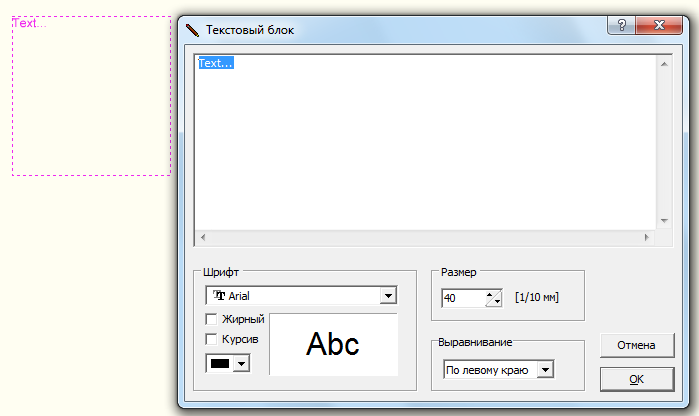
В этом окне вводится и редактируется текст. При редактировании текста все изменения отображаются на листе в текстовом блоке. Здесь же можно изменить параметры текста.
Двойной щелчок на текстовом блоке открывает снова окно «Текстовый блок».
Если вы выделите текстовый блок, то на экране отобразиться прямоугольная пунктирная область. Эта область не будет отображаться при распечатке или экспорте чертежа в рисунок. Если текст будет выходить за эту пунктирную область, то он будет обрезан. Пунктирная область определяет максимальный размер текстового блока в sPlan.
Если вы выделите текстовый блок, то с помощью черных квадратиков вы можете изменить его размер, форму или повернуть на определенный угол.
Вставка рисунка
Для вставки рисунканужно выбрать пункт «Файлы рисунков» из меню «Файл» или щелкнуть на кнопке "Рисунок" панели инструментов черчения.
Программа sPlan7.0 поддерживает форматы изображений типа BMP и JPG. Если нужно вставить изображение другого формата, то сначала необходимо конвертировать их в BMP или JPG формат.
Если выделить вставленное изображение, то с помощью черных квадратиков можно изменить его форму, размер и повернуть на заданный угол.
Следующая кнопка "Лупа",предназначена для изменения масштаба чертежа, схемы. Можно увеличить масштаб чертежа, щелкнув левой кнопкой мыши на листе sPlan. Правая кнопка мыши уменьшает масштаб чертежа. Вы также можете выделить мышкой область, которую необходимо увеличить.
Но теперь в программе sPlan 7.0 изменение масштаба происходит вращением колёсика мыши. Это самый лучший и самый удобный способ для изменения масштаба ваших чертежей, который появился только в седьмой версии программы.
Есть ещё три дополнительных функций изменения масштаба доступных из панели инструментов sPlan: (третья кнопка справа).
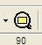
Масштаб листа – подгоняет размер листа под размер монитора.
Масштаб элемента – увеличивает область со всеми элементами на размер монитора.
Масштаб по выделенному – увеличивает до видимой области выделенный фрагмент чертежа.
Измеритель. С помощью него можно измерить размер всего рисунка, схемы.
Как осуществить поворот, отражение и пространственное размещение объектов в sPlan.
Эти функции доступны в меню функций на панели инструментов или из контекстного всплывающего меню. Чтобы выполнить одну из этих функций, сначала выберите объект, а затем вызовите соответствующую функцию.
В sPlan доступны следующие функции:
- повернуть;
- отразить по горизонтали;
- отразить по вертикали;
- на передний план;
- на задний план.
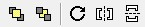
С помощью кнопки «Повернуть» на панели инструментов вы можете вращать выбранные элементы на 90 ° по часовой стрелке.
С помощью пункта "Повернуть ..." в контекстном всплывающем меню вы можете повернуть выбранные элементы на заданный угол, который устанавливается в одноименном с пунктом окне. Если при вращении элемента удерживать клавишу Shift на клавиатуре, то текст элемента (обозначение и номинал) вращаться не будет и останется в первоначальном положении. Вы можете вращать выбранные элементы также с помощью мыши .
Отразить по горизонтали/по вертикали.
Все выбранные объекты будут отражены вдоль вертикальной или горизонтальной оси. Текстовые объекты не будут отражаться в целях читабельности текста. Если вы хотите отразить текст, то во время вызова этой функции удерживайте нажатой на клавиатуре клавишу Shift.
На передний план/на задний план.
Эти функции позволяют помещать графические объекты sPlan на задний или передний план. Эффект этих функций можно увидеть если на чертеже перекрыты два и более объектов. Объект помещенные на передний план будет закрывать объекты, помещенные за ним. Объекты, помещенные на задний план, будут закрываться объектами, находящимися перед ними..
Создание схем, чертежей в программе sPlan 7.0.
Первое, что нужно сделать перед созданием чертежа в программе sPlan, это определить формат листа, который вы хотите использовать для вашей схемы. Есть два возможных способа сделать это. Вы можете выбрать пункт главного меню Лист – Свойства или кликнуть правой кнопкой мыши на вкладке листа и выбрать пункт контекстного меню Свойства.
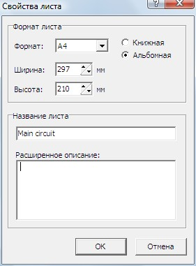
В результате этого появится диалоговое окно, которое позволяет ввести формат, ориентацию листа и название текущего листа. Расширенное описание будет отображаться в виде всплывающей подсказки при наведении курсора мыши на вкладку листа.
Настройка сетки.
При создании схем в sPlan, как правило на листе всегда включена сетка. Это очень удобный вспомогательный инструмент, с помощью которого можно точно совместить графические элементы и компоненты схемы при их соединении. Размер сетки по умолчанию равен 1 мм. Обычно это оптимальное значение размера, однако вы можете изменить это значение, если это необходимо, например для наших библиотек лучше подходит размер сетки 0,5 мм.
Размер сетки сохраняется для каждого отдельного файла проекта и может быть изменен в окне Параметры, войти в которое можно из главного меню Опции - Основные параметры, а далее выбрать сетку в левой части окна.
Вы также можете вызвать окно Параметры с включенной вкладкой Сетка, используя кнопку Сетка на панели инструментов. Если вам нужно изменить размер сетки в диапазонах наиболее часто используемых значений, вы можете нажать на стрелку вниз справа от кнопки Сетка для выбора необходимого значения размера сетки.
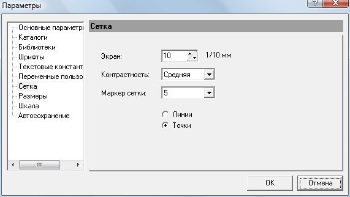
Контрастность:
С помощью этого выпадающего списка Вы можете определить контрастность отображения сетки на листе. Вы даже можете скрыть сетку, выбрав пункт Невидимо.
Маркер сетки:
В данном пункте Вы можете установить градацию линий сетки. Например, если установлена цифра «10», то каждая десятая линия будет чуть жирнее, чем остальные. На практике очень удобная функция.
Радио-кнопки Линии / Точки.
Переключая кнопки Линии / Точки, можно устанавливать отображение сетки либо в виде линий, либо в виде точек.
Для временного отключения привязки к сетке необходимо нажать клавишу SHIFT при перемещении графического элемента.
Вы также можете выключить привязку к сетке полностью, с помощью соответствующей кнопки в строке состояния в нижней части окна программы sPlan.
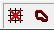
В этом случае сетка видна, но привязка к сетке отключена.
Функция "резиновая лента".
Функция резиновая лента позволяет сохранить в программе sPlan соединения между компонентами схемы при перемещении одного их них. Если соединенный компонент перемещать при включенной функции резиновая лента, то линии подключенная к этому компоненту перемещаются вместе с ним.
Включается этой кнопкой;
С помощью этой кнопки в строке состояния программы sPlan Вы можете включить или отключить функцию резиновая лента.
Функция "резиновая лента" работает в том случае, если компоненты соединены между собой проводниками (линиями), то есть, подключены друг к другу. Если имеет место простое пересечение проводников, или компоненты соединены между собой без соединительных линий (проводников), то функция "резиновая лента" не будет работать, и эти линии перемещаться вместе с компонентом не будут.
После перемещения компонента с включенной функцией резиновая лента, потом требуется скорректировать линии связи между компонентами. При выделении линии можно перемещать из за узлы и границы. Вы можете добавлять или удалять узлы на линиях. Для этого кликните правой кнопкой мыши на узле и выберете удалить или добавить узел.
Функция "привязка к концам".
Функция Привязка к концам очень полезная в программе. Эта функция является дополнением к функции привязки к сетке. Автоматическая привязка осуществляется для всех точек соединения и концов графических элементов.
С помощью этой кнопки в строке состояния в sPlan вы можете включить или отключить привязку к концам.
Суть этой функции состоит в том, что как только вы приблизитесь конечной или начальной точкой графического элемента к такому же подобному концу другого элемента, то их концы автоматически соединяться в одной точке. Красный квадрат в месте соединения будет указывать что общая точка соединения концов элементов определена или захвачена. Функция привязки к концам позволяет с большой точностью соединить концы элементов друг с другом.
Изменение цвета нескольких элементов.
Выделите объекты, которые должны быть изменены и вызовите функцию «Изменить цвет» из меню Сервис главного меню sPlan или выберите пункт «Изменить цвет…» из контекстного всплывающего меню. Откроется окно с палитрой цветов, которое позволит вам выбрать необходимый цвет. Для того, чтобы увидеть эффект изменения цвета снимите выделение с выбранных элементов. Все контуры и заливки элементов изменят свой цвет на новый, за исключением объектов, которые имеют белую заливку. Элементы, залитые белым цветом, обычно предназначены для размещения в них текста, который всегда должен быть читаемым.
Группировка и разгруппировка элементов sPlan.
Графические элементы в sPlan могут быть объединены в группы, то есть сгруппированы. Группировка позволяет выделять одним щелчком мыши все элементы, находящиеся в группе. Так же вы не сможете случайно изменить позицию элемента в группе, а так же его свойства, такие как цвет и т.д. Сгруппированные элементы не могут быть удалены по отдельности.
Чтобы сгруппировать элементы, нажмите кнопку «Группировать» на панели инструментов (закрытый замочек), либо выберите пункт «Группировать» из контекстного выпадающего меню, или из меню "Сервис".
Если вы хотите изменить свойства элемента входящего в группу, вы должны сначала разгруппировать эту группу. Выберите опцию «Разгруппировать» главного меню «Сервис», либо нажмите кнопку «Разгруппировать» на панели инструментов (открытый замочек), либо выберите пункт контекстного меню «Pазгруппировать». Если группа содержит подгруппы, они не будут разгруппированы. Для разделения подгруппы на отдельные элементы с ней необходимо проделать такие же операции, что и с группой.
Использование форм в sPlan.
На любой лист проекта в sPlan вы можете вставить так называемую фоновую форму. Форма представляет собой отдельный слой, который находится под чертежом, то есть на заднем плане. В режиме черчения схемы сама форма не доступна для редактирования. Преимущество использования формы заключается в том, что ее элементы не мешают вашей работе, при редактировании схемы.
Вы можете создавать свои собственные формы, или редактировать существующие формы, специально под ваш проект.
Создание собственной формы в sPlan.
Если вы хотите внести изменения в форму или создать собственную форму в меню Форма выберите пункт Редактор форм. При этом ваш чертеж будет скрыт, а форма станет доступна для редактирования. Теперь вы можете изменить форму с помощью стандартных инструментов и приемов sPlan.
После окончания редактирования формы вам необходимо выйти из режима редактирования форм, выбрав пункт Редактор форм в меню Форма. В результате форма будет установлена на задней план чертежа, а схема вновь отобразиться на листе.
Как сохранить формы в файл.
Созданная или отредактированная форма может быть сохранена в файл в случае дальнейшего использования на других листах и проектах. Для этого в меню Форма активируйте пункт «Сохранить форму…». В открывшемся окне выберите путь для сохранения и нажмите кнопку «Сохранить». Файлы, содержащие формы, имеют расширение *. SBK.
Как загрузить формы из файла.
Вы можете загрузить существующие формы на текущую страницу. Вызовите пункт «Открыть форму…» в меню Форма и выберите файл с расширением *. SBK. Обратите внимание, что любая существующая форма на текущей странице теряется, если вы загружаете новую форму.
Свойства элемента из библиотеки.
Если кликнуть по любому элементу в библиотеке или на схеме, то откроется окно свойств этого элемента.
Здесь Вы можете вручную ввести обозначение с номером для каждого отдельного компонента, или включить очень полезную опцию автоматической нумерации, написать название, отображаемое в библиотеке при наведении курсора на элемент, или отредактировать этот элемент.
Чтобы отредактировать элемент, нужно нажать кнопку "Редактор" и откроется редактор этого элемента.
В нём в принципе всё то же самое, только по окончании редактирования элемента нужно не забыть нажать кнопку "ОК" с зелёной галочкой для закрепления результатов редактирования.
Если Вы отредактировали (сделали из элемента другой) элемент на схеме, и его у Вас нет в библиотеке, то его можно добавить в библиотеку.
Для этого выбираем соответствующий раздел в библиотеке, выделяем элемент (или элементы, которые нужно добавить), и в меню "Элемент" выбираем пункт "Элемент с новым номиналом в библиотеку", и выделенный элемент или несколько элементов добавятся в библиотеку. Их потом при желании можно будет курсором переместить вверх или вниз по разделу библиотеки, то есть расставить на места.